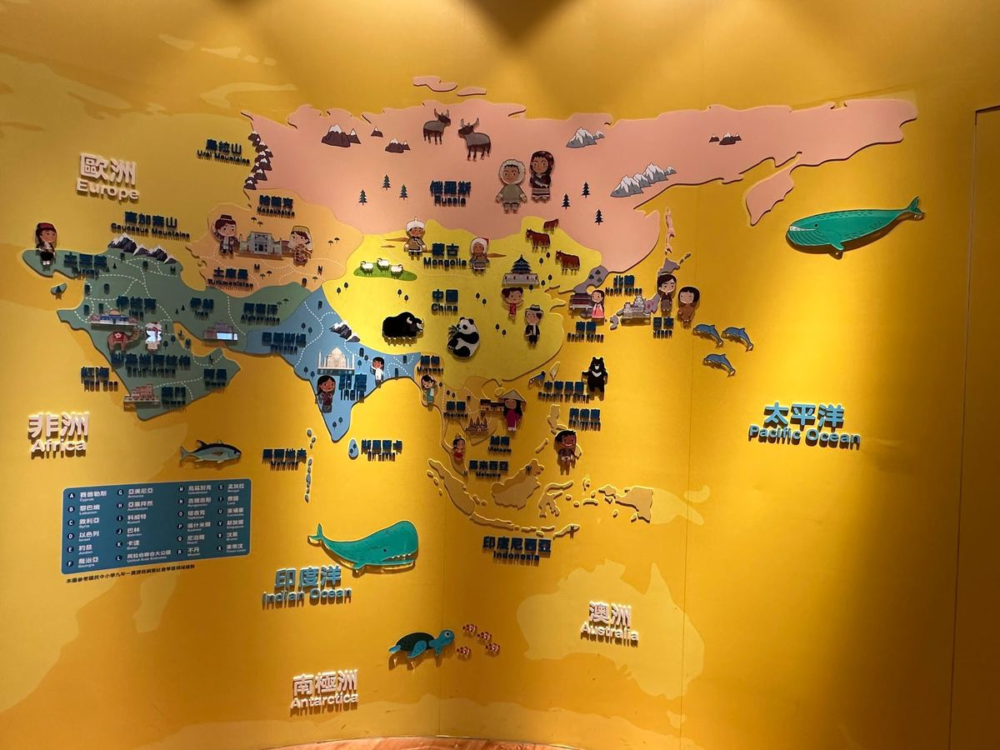
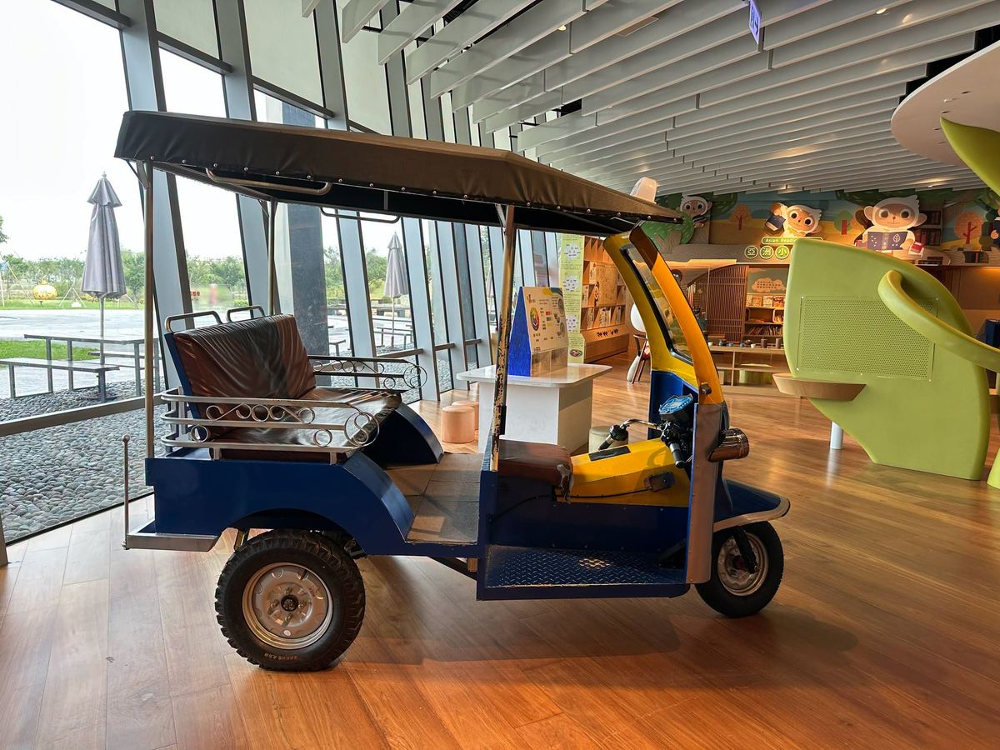
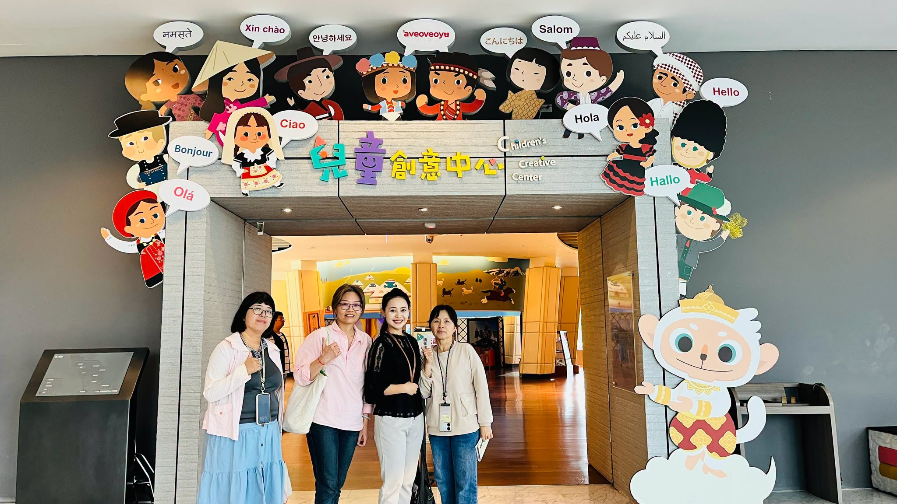

After final exams, Tuku Elementary never lets the children simply watch videos in the classroom. Instead, on the very last day of the semester (June 30), we are taking the children to the National Palace Museum Southern Branch in Chiayi for a summer art lesson that travels through time and history.
Only through thorough preparation can every field trip truly open a child's vision.
To make sure every child comes away enriched, our teachers made a preliminary visit to the Southern Branch in advance, gathered information on the exhibitions, created worksheets and PowerPoint presentations, and held a pre-excursion briefing on June 25. This gave the children a foundational understanding of what they were about to experience. Some may wonder why we go to such lengths — because we deeply believe that only through thorough preparation can every outdoor excursion be truly educational and meaningful. Only then will the vision of children from rural areas not be limited by distance.
Imagine the children's wide eyes as they discover the secrets of Qing Dynasty jade artifacts and learn about ancient people's clever ways to stay cool in the summer heat — the shining look in their eyes will be the warmest reward for the Tuku team. Explore the world! We believe that walking the right path in education will surely give our children the widest possible future.


期末考後，學校從不選擇讓孩子在教室看影片。而是即將在本學期的最後一天（6/30），帶孩子前往嘉義故宮南院，進行一堂跨越時空的夏日美學課！
為了讓孩子滿載而歸，老師們提前到故宮南院場勘，蒐集相關展覽資料，製作學習單與PPT，並在前日（6/25）辦理戶外見學前訓說明，讓孩子對即將進行的課程具備基礎認識。或許有人質疑為何如此大費周章，因為我們深信，唯有做好最充足的準備，讓每一場戶外見學更具教育性與價值性，偏鄉孩子的視野 (Vision)才不會被距離限制。
想像著孩子將帶著好奇心探尋清代玉器密碼、理解古人消暑的智慧，星期一那閃閃發亮的眼神，就是給予土庫團隊最溫暖的回饋。Explore the world!（探索世界！）「走在教育對的道路上」，相信我們土庫團隊用心，一定能給孩子最寬廣的未來！
Tap 🔊 to listen · 點喇叭聽發音
Reading gives us a wider vision.閱讀給我們更寬廣的視野。
We love to explore new places.我們喜歡探索新的地方。
The museum has many beautiful things.博物館裡有許多美麗的東西。
Ancient people were very clever.古代人非常聰明。
We prepare well before every trip.我們在每次旅行前都做好準備。
Outdoor learning is so much fun.戶外學習真的非常有趣。
Match the word to its meaning
把英文和中文配對
Matched 配對成功：0 / 6